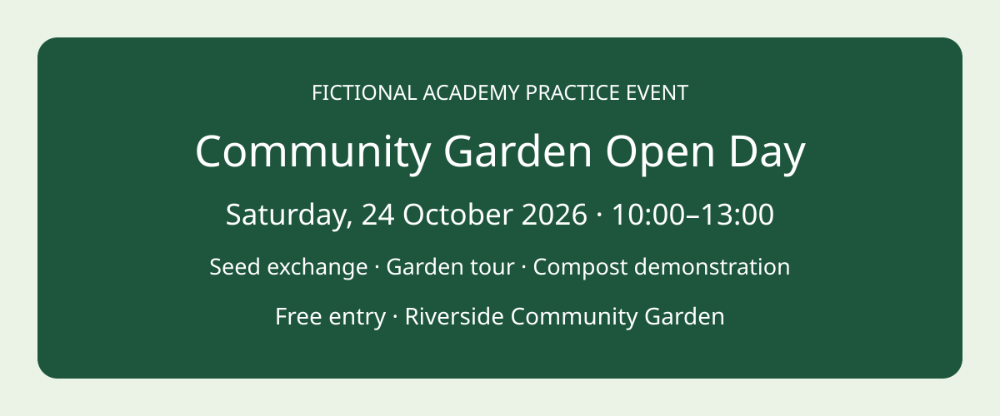

<!doctype html><html lang="en"><meta charset="utf-8"><meta name="viewport" content="width=device-width,initial-scale=1"><title>Academy Approval Practice</title><style>*{box-sizing:border-box}body{margin:0;background:#eef2f7;color:#17263c;font:20px/1.5 system-ui,sans-serif}header{background:#14364e;color:white;padding:22px 6%}main{max-width:1440px;margin:30px auto;padding:0 60px}h1{font-size:36px;margin:0}h2{font-size:30px}select,button,input{font:inherit;padding:10px;border:1px solid #a2b0c0;border-radius:6px}button{cursor:pointer}button:disabled{cursor:not-allowed;background:#e2e7ed;color:#546174}.box{background:white;border:1px solid #cbd5e1;border-radius:12px;padding:24px;margin:20px 0}.label{background:#fef3c7;color:#713f12;padding:6px 12px;border-radius:4px}.evidence{border-left:8px solid #1670a2}.warn{border:3px solid #b73c30}.grid{display:grid;grid-template-columns:1fr 1fr;gap:24px}table{border-collapse:collapse;width:100%}td,th{padding:14px;text-align:left;border-bottom:1px solid #b9c7d5}a{color:#075985}img{max-width:100%}.muted{color:#45566e}nav{margin:20px 0}#status{font-weight:bold}.flow{display:flex;gap:18px;align-items:center;flex-wrap:wrap}.node{padding:22px;background:#e9f1ff;border:2px solid #4773a5;border-radius:8px}.disabled{background:#e5e7eb;border-color:#777}footer{padding:25px;color:#465a70}pre{white-space:pre-wrap;font:inherit}</style><header><h1>Emmanuel Corels Academy · Approval Practice</h1><div>Fictional community garden · local practice only · external publishing disabled</div></header><main><nav><label for="view">Inspect section </label><select id="view"></select></nav><div id="content"></div><footer>Self-created Academy application. No real account connection, publishing endpoint or external message is available.</footer></main><script>
const body='Community Garden Open Day — Saturday, 24 October 2026, 10:00–13:00. Seed exchange, garden tour, and compost demonstration. Entry is free. Location: Riverside Community Garden.';
const action='<h2>Publish community garden announcement</h2><p>If approved: one proposed post moves toward publication on the named test page. Unrelated records and channels remain untouched. Real publishing is disabled.</p>';
const destination='<div class="box"><h2>Exact destination</h2><p>Channel: Social post<br>Destination: Community Garden — Test Event Page<br>Page ID: academy-garden-test-page<br>Visibility: Non-public test</p><p><a href="test-destination-action-config.json" target="_blank">Open simulated target/action configuration</a> — compare exact channel, page ID, name, visibility and disabled publishing state.</p></div>';
const draft='<div class="box"><span class="label">Generated draft</span><h2>Full proposed content</h2><p>'+body+'</p></div>';
const attachment='<div class="box"><h2>Included attachment</h2><p>garden-open-day-banner-v1.svg · Included · self-created fictional artwork</p><p><a href="banner-permission.md" target="_blank">Open permission record</a></p></div>';
const evidence='<div class="box evidence"><h2>Opened supporting records</h2><p>Fictional teaching records; distinct from generated wording.</p><p><a href="event-brief.json" target="_blank">Approved event brief · GARDEN-BRIEF-001</a></p><p><a href="venue-confirmation.md" target="_blank">Venue confirmation · GARDEN-VENUE-001</a></p><p><a href="banner-permission.md" target="_blank">Permission-cleared banner</a></p></div>';
const facts='<div class="box"><h2>Compare with opened records</h2><table><tr><th>Draft detail</th><th>Opened record</th><th>Status</th></tr>'+[['Community Garden Open Day','Approved event brief'],['Saturday, 24 October 2026','Approved event brief'],['10:00–13:00','Approved event brief'],['Riverside Community Garden','Venue confirmation'],['Seed exchange · Garden tour · Compost demonstration','Approved event brief'],['Free entry','Approved event brief'],['garden-open-day-banner-v1.svg · self-created permission','Banner permission']].map(r=>'<tr><td>'+r[0]+'</td><td>'+r[1]+'</td><td>Matched · <a href="'+(r[1]==='Venue confirmation'?'venue-confirmation.md':r[1]==='Banner permission'?'banner-permission.md':'event-brief.json')+'" target="_blank">Open record</a></td></tr>').join('')+'</table><p>Teaching-record comparison only; “Matched” describes supplied sample consistency, not your recorded approval. Inspect the attachment itself against these records before making your own decision.</p></div>';
const gaps='<div class="box"><h2>Assumptions</h2><p class="label">Assumption: audience wants a short public-style announcement</p></div><div class="box warn"><h2>Missing information</h2><p>Accessibility details: not supplied<br>Contact method: not supplied</p><p>Approval unavailable — information required. Do not invent missing facts.</p></div>';
const version='<div class="box"><h2>Version and reviewer</h2><p>Content version: 1<br>Reviewer: Event coordinator — test reviewer<br>Confirm authority for this destination: not confirmed</p><p>Material changes require a new version and fresh review.</p></div>';
const controls='<div class="box"><h2>Explicit decision</h2><button disabled>Approve this version</button> <button id="reject">Reject this version</button><p id="status">No decision recorded — external action remains disabled</p><p>Approval is unavailable while essential information and authority are unresolved. Reject is a local practice record only.</p></div>';
const workflow='<div class="box"><h2>Review before consequence</h2><div class="flow"><div class="node">Sample form</div><div>→</div><div class="node">Create draft</div><div>→</div><div class="node">Request human review</div><div>⛔</div><div class="node disabled">External action disabled</div></div><p>Design review only — no publication</p></div>';
const manual='<div class="box"><h2>Pending Review</h2><p>Community Garden approval packet · Awaiting decision</p><ul><li><a href="approval-request-v1.json" target="_blank">Full action, destination, content, uncertainty and version</a></li><li><a href="event-brief.json" target="_blank">Opened event brief</a></li><li><a href="venue-confirmation.md" target="_blank">Venue confirmation</a></li><li><a href="garden-open-day-banner-v1.svg" target="_blank">Actual banner</a></li><li><a href="review-register.csv" target="_blank">Review register</a></li></ul><table><tr><th>Item</th><th>Version</th><th>Reviewer</th><th>Decision</th><th>Decision time</th><th>External action</th></tr><tr><td>Garden announcement</td><td>1</td><td>Event coordinator</td><td>Unrecorded</td><td>Unrecorded</td><td>Disabled</td></tr></table></div>';
const views={vague:'<div class="box warn"><h2>Draft ready — Continue</h2><button disabled>Continue</button><p>Incomplete alert: recipient, wording and consequence are hidden. Do not authorize from this alert.</p></div>',workflow,action:'<div class="box">'+action+'</div>',destination,draft,attachment,evidence,comparison:facts,uncertainty:gaps,version,decision:version+controls,permissions:'<div class="box"><h2>Demonstration permissions</h2><p>Read sample event record: permitted locally<br>Create approval request: permitted locally<br>View test destination: permitted locally<br>Real publishing permission: disabled</p></div>',assembled:'<div class="box">'+action+'</div>'+destination+draft+attachment+evidence+facts+gaps+version+controls,manual,checklist:'<div class="box"><h2>Six checks before asking for approval</h2>'+['Action explicit','Destination exact','Content complete','Support inspectable','Uncertainty visible','Version identifiable'].map(x=>'<p>☐ '+x+'</p>').join('')+'<p>If any answer is no, improve the request or obtain missing information.</p></div>',template:'<div class="box"><h2>Reusable approval request</h2><p><a href="approval-request-template.md" target="_blank">Open editable manual template</a></p><p>Action · Destination · Content · Attachments · Supporting records · Assumptions · Missing information · Version · Reviewer · Decision</p></div>',audit:'<div class="box"><h2>Decision record fields</h2><p>Submitted version: 1<br>Reviewer: Event coordinator — test reviewer<br>Decision: Unrecorded<br>Decision time: Unrecorded<br>External action: Disabled</p><p>No unrelated sensitive information is collected.</p></div>'};
const sel=document.getElementById('view');Object.keys(views).forEach(k=>sel.add(new Option(k[0].toUpperCase()+k.slice(1),k)));let decisionRecord;try{decisionRecord=JSON.parse(localStorage.getItem('academy-garden-decision-v1')||'null')}catch{};function decisionText(){return decisionRecord?'Practice decision: '+decisionRecord.decision+' · version '+decisionRecord.version+' · '+decisionRecord.reviewer+' · '+decisionRecord.time+' · external action disabled':'No decision recorded — external action remains disabled'};function show(){document.getElementById('content').innerHTML=views[sel.value];if(sel.value==='audit'&&decisionRecord){const q=document.createElement('pre');q.textContent=JSON.stringify(decisionRecord,null,2);document.getElementById('content').append(q);}const st=document.getElementById('status');if(st)st.textContent=decisionText();const b=document.getElementById('reject');if(b)b.onclick=()=>{decisionRecord={version:1,reviewer:'Event coordinator — test reviewer',decision:'Reject this version',time:new Date().toISOString(),externalAction:'Disabled',fictional:true};localStorage.setItem('academy-garden-decision-v1',JSON.stringify(decisionRecord));document.getElementById('status').textContent=decisionText();};location.hash=sel.value;}sel.onchange=show;sel.value=Object.hasOwn(views,location.hash.slice(1))?location.hash.slice(1):'workflow';show();
</script></html>